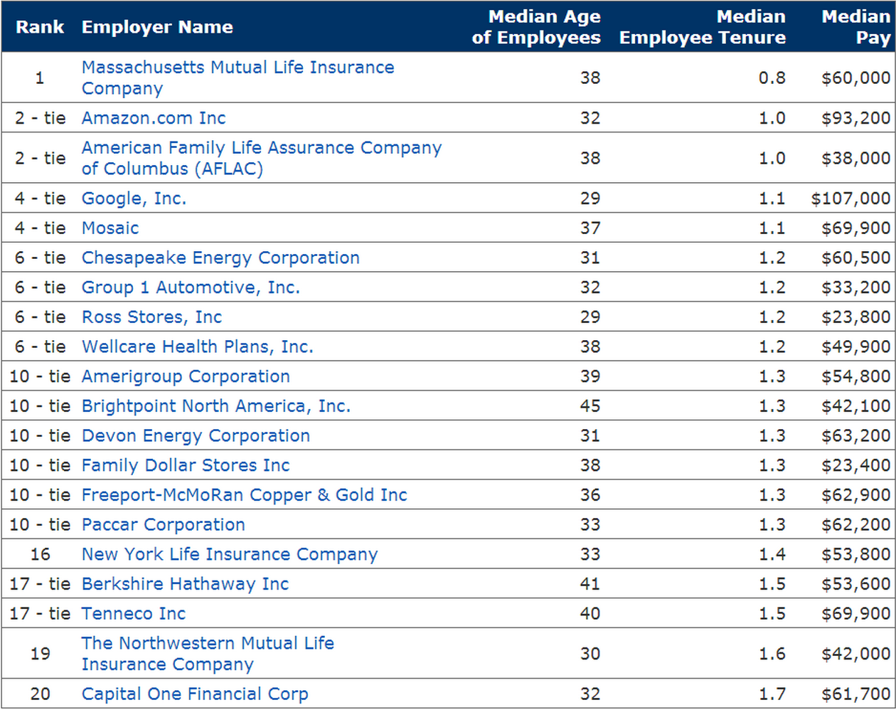

Today tech industry has one of the lowest employee tenure average registered in the last few years. Most companies don’t take this too seriously yet. Tech is growing, and a lot of new job positions are opening. Maybe industry has a “complex”, thinking that employee tenure is too small of a price to pay for world dominance?
The fact is our mentalities have changed over the last decade. From 10 years tenure outlook to an average of 5 years now, everything changes, especially the rules of HR. Jobvite CEO Dan Finnigan says:
“It used to be that when you were looking at someone’s resume and they changed jobs more frequently than every five to seven years, they’d be labeled as a job hopper, unstable, greedy or selfish, unable to hold a job. Whatever it was, it usually flagged them and pulled them out of the stack. Now, in some regards, I think it has flipped. Now when recruiters look at someone who has stayed in a role for more than three years, the question is why? What have they been doing? … The world is changing really fast. There’s this intuition that if you’re doing the same job for more than three years and your job didn’t change, that means either your company’s not that dynamic or you are not that dynamic. I’m not saying that’s always the case, I’m just saying there’s this increasing perception.”
The tech industry has the lowest average employee tenureEmployee tenure between 2012-2013, has average of 5 years registered. Employees in this industry don’t stay in one company for a long period of time and seem to have little connection to or investment in their jobs. For tech companies, personnel retention is even more changeable because the average employee tenure being estimated at around 3 years.
Employee turnover is a costly issue for every company. When employee is leaving, a company loses both its financial investment in recruitment and training costs for new employee, as well as its non-financial investment (that can sometimes weigh harder) in knowledge, workplace collaboration and competitiveness.
Let’s take a look at the tech giants in USA:The overall average was 3.68 years back in January of 2012, the average dropped with 1 year, from 4.6 years in January 2010.

I haven't’ even thought that companies like Google and Amazon, where everybody wants to work, have so law employee tenure rate.
Economists are speculating that the main reason for this low tenure rate is the recent hiring spree, that brought on new, younger talent, placing the company average age at 29.
I think that this problem comes because talented people are more interested in creating their startups, and to not work for other people anymore. Some people are tired from large companies, where they can’t realize all ideas in life, because of the company culture and managerial staff. We can all see how Silicon Valley is growing day by day.
Google is represented in popular online articles as the Nirvana of technology workplaces: free five-star food, five months of paid maternity leave, great insurance, free yoga, kindergartens and gyms at the workplace, the freedom to work on one’s own projects 20 percent of the time and even death benefits. But benefits is not the only thing that employees are looking for.
My personal experience:
I have not so big experience behind, but as a young person I can say that I’ve worked in one place not more than 2 years, and every time when I felt that there is no growth within the company, I was looking for something different. That is what statistics says, people work approximately 3-5 years for one employer now.
How can we solve this problem?
I think it all depends from company’s culture and HR strategy. Here are few things that can help keep employees in your company for long term:
- freedom in realization ideas
- possibility to take leadership in some projects(it will help employee to feel his value in the company)
- give opportunity for personal and professional growth
- get feedback from employees serially, so you can understand what do they worry about, and what would be good to change.
Thank you,
Best
Iulia